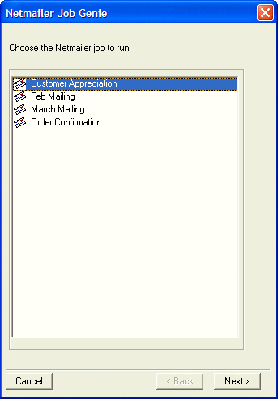
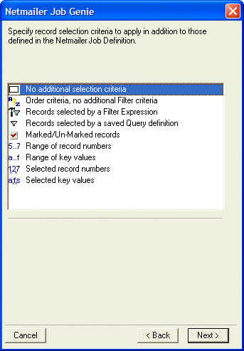
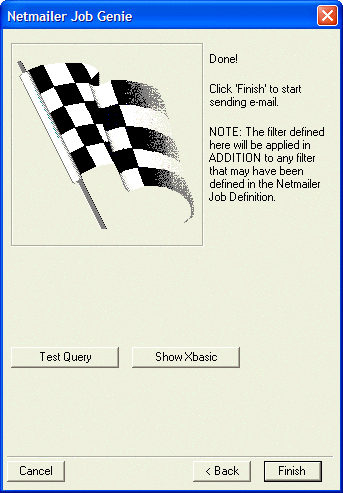

Running a Netmailer Job
You can run Netmailer jobs by using the Netmailer Job Genie.
Method One
Start Alpha Five and open a database.
Right-click on a table or set, and select Addins > Netmailer > Run Job. The Netmailer Job Genie appears.

Select the job you want to run, and click Next >.
Optionally, add additional record selection criteria.

Click Next > Finish.

See Also